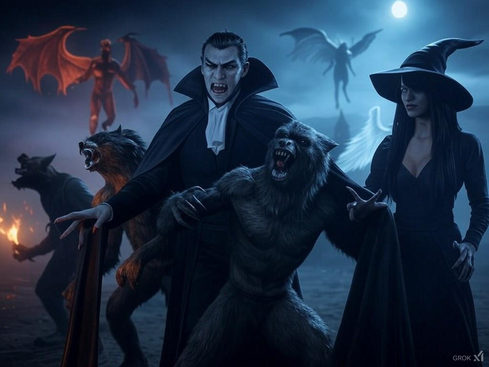

ფილმი: „ბოროტება და სიკეთე“ ჟანრი: ზებუნებრივი ფენტეზი, მისტიკა, დრამა და მოქმედება. მთავარი იდეა ოთხი განსხვავებული არსება — ვამპირი, მაქცია, ადამიანი და ჯადოქარი — აღმოჩნდებიან ომში, რომელიც მთელი სამყაროს ბედს გადაწყვეტს. თითოეულ მათგანს თავისი სიმართლე აქვს, მაგრამ საბოლოოდ სიკეთისა და ბოროტების საზღვარი იმაზე რთული აღმოჩნდება, ვიდრე თავიდან ეგონათ. ათასწლეულების წინ ადამიანებმა დაივიწყეს ერთი საშინელი საიდუმლო: ჯოჯოხეთის კარი ბოლომდე არასოდეს დახურულა. ის მხოლოდ ოთხი უძველესი ძალით იყო დალუქული. ახლა კი ვიღაცამ ამ ბეჭდის გატეხვა გადაწყვიტა. მთავარი პერსონაჟები 1. ვამპირი — დეიმონ ვალმორი ასაკი: დაახლოებით 800 წელი. დეიმონი უძველესი ვამპირია, რომელიც ოდესღაც ადამიანების დასაცავად იბრძოდა. თუმცა, როდესაც მისმა ოჯახმა უღალატა და ადამიანებმა ყველაფერი წაართვეს, რაც უყვარდა, მან სიკეთეზე უარი თქვა. ახლა მას სურს ჯოჯოხეთის კარის გახსნა, რათა ისეთი ძალა მოიპოვოს, რომლის შეჩერებაც ვეღარავინ შეძლებს. საიდუმლო: დეიმონს სინამდვილეში არ სურს მთელი სამყაროს განადგურება. მას უნდა გააცოცხლოს ადამიანი, რომლის სიკვდილშიც საკუთარ თავს ადანაშაულებს. ამისთვის კი მზადაა ათასობით სიცოცხლე საფრთხეში ჩააგდოს. 2. მაქცია — კაიროს ბლექი ასაკი: 24 წელი. კაიროსი უძველესი მაქციების საგვარეულოს უკანასკნელი მემკვიდრეა. მას განსაკუთრებული უნარი აქვს: სავსე მთვარის გარეშეც შეუძლია საკუთარ ძალებზე კონტროლის შენარჩუნება. ვამპირები მის გვარს საუკუნეების განმავლობაში მტრად მიიჩნევდნენ. კაიროსს სძულს ვამპირები, რადგან ბავშვობაში დეიმონმა მისი ოჯახი გაანადგურა. როდესაც გაიგებს, რომ ვამპირი ჯოჯოხეთის ძალას იძენს, გადაწყვეტს, რომ ის საკუთარი ხელით უნდა გაანადგუროს. საიდუმლო: კაიროსის სისხლში უძველესი ჯადოსნური ძალაა დამალული. სწორედ მას შეუძლია ჯოჯოხეთის კარის საბოლოოდ გახსნა ან სამუდამოდ დახურვა. 3. ადამიანი — ალექს მორგანი ასაკი: 22 წელი. ალექსი ჩვეულებრივი ადამიანი ჩანს, რომელსაც არც ვამპირის სისწრაფე აქვს და არც მაქციის ძალა. ის ძველი წიგნების მკვლევარია და ზებუნებრივი არსებების შესახებ წლების განმავლობაში აგროვებდა ინფორმაციას. ერთ ღამეს აღმოაჩენს ხელნაწერს, რომელშიც აღწერილია ოთხი არსება და წინასწარმეტყველება სამყაროს დასასრულის შესახებ. სწორედ ამის შემდეგ ხვდება დეიმონსა და კაიროსს. ალექსს შეუძლია ყველას მხარეს დადგეს, მაგრამ ის არჩევს საკუთარ გზას. მას სჯერა, რომ ბოროტების შეჩერება ყოველთვის უფრო დიდი ბოროტებით არ შეიძლება. საიდუმლო: ალექსის წინაპარი იყო ადამიანი, რომელმაც საუკუნეების წინ ჯოჯოხეთის კარი პირველად დალუქა. ამიტომ მას აქვს უნარი, რომელიც ვამპირებსა და მაქციებსაც კი არ ესმით. 4. ჯადოქარი — სერაფინა ნოქსი ასაკი: 340 წელი. სერაფინა უძველესი ჯადოქარია, რომელმაც სიცოცხლის დიდი ნაწილი აკრძალული მაგიის შესწავლას მიუძღვნა. მას შეუძლია დროებით შეაჩეროს სხვა არსებების ძალები, გახსნას პორტალები და გამოიძახოს ცეცხლი, რომელიც ჩვეულებრივი წყლით ვერ ჩაქრება. ის თავიდან ალექსსა და კაიროსს ეხმარება, მაგრამ დეიმონთანაც აქვს საიდუმლო შეთანხმება. საიდუმლო: სერაფინამ იცის, რომ ჯოჯოხეთის ცეცხლის შეჩერება მხოლოდ მაშინ იქნება შესაძლებელი, თუ ოთხივე არსება საკუთარი არჩევანის შედეგებს მიიღებს. თუმცა, წინასწარმეტყველებაში არ წერია, ვინ გადარჩება. ფილმის სრული სიუჟეტი თავი I — სისხლის მთვარე ფილმი იწყება 700 წლის წინანდელი მოვლენებით. პატარა სოფელში ვამპირებსა და ადამიანებს შორის ომი მძვინვარებს. სოფლის მახლობლად მაქციების კლანი ცხოვრობს, ჯადოქრები კი ცდილობენ, ორივე მხარე ერთმანეთისგან დაიცვან. ერთ ღამეს ცაზე სისხლისფერი მთვარე ჩნდება. დეიმონი, რომელიც მაშინ ჯერ კიდევ ახალგაზრდა ვამპირია, იგებს, რომ მიწისქვეშა ტაძარში ჯოჯოხეთის კარის გასაღებია დამალული. მას ჰგონია, რომ ამ გასაღებით საყვარელი ადამიანის დაბრუნებას შეძლებს. ტაძარში შესვლისას დეიმონი აკრძალულ რიტუალს ატარებს. მიწა იძვრის, კედლებზე უძველესი სიმბოლოები ინთება და ქვემოდან ცეცხლის ხმა ისმის. მაგრამ კარს მიღმა მხოლოდ ცეცხლი არ არის. იქ ცხოვრობს უძველესი არსება, რომელსაც ნერაქსი ჰქვია — ჯოჯოხეთის მცველი, რომელსაც ადამიანთა სამყაროში შემოსვლა სურს. დეიმონი უკან იხევს, მაგრამ უკვე გვიანაა: მისი სისხლის ნაწილი კარს მიღმა რჩება და ნერაქსი მის სულს უკავშირდება. ტაძრის ჯადოქრები კარს ხურავენ, თუმცა დეიმონი გარბის. ბოლო კადრში ვხედავთ, როგორ ეხსნება დეიმონს თვალები და მის გუგებში წითელ ცეცხლთან ერთად შავი ალი ჩნდება. ის ჩურჩულებს: „თუ ამ სამყაროში სიკეთეს ადგილი არ აქვს, მაშინ მას ბოროტება მართავს.“ თავი II — ოთხი გზა ერთდება თანამედროვე თბილისში ალექსი ძველ არქივში ხელნაწერს პოულობს. წიგნში წერია, რომ ჯოჯოხეთის კარი მომდევნო სისხლისფერი მთვარის დროს გაიხსნება. ალექსი ცდილობს, ხელნაწერის მნიშვნელობა გაარკვიოს, მაგრამ იმავე ღამეს მას დეიმონი ესხმის თავს. ალექსის გადასარჩენად კაიროსი ჩნდება. ის ვამპირს ებრძვის და ალექსს გაქცევაში ეხმარება. მოგვიანებით მათ სერაფინა უერთდება და უხსნის, რომ დეიმონი უკვე ჩვეულებრივი ვამპირი აღარ არის. მის სისხლში ჯოჯოხეთის ცეცხლია, რომელიც ყოველ ახალ მსხვერპლთან ერთად ძლიერდება. ოთხივე პერსონაჟის გზები საბოლოოდ ერთდება, მაგრამ მათი მიზნები განსხვავებულია: * კაიროსს დეიმონის მოკვლა სურს. * ალექსს ჯოჯოხეთის კარის დახურვა უნდა. * სერაფინა ცდილობს, უძველესი წინასწარმეტყველება ახდეს ისე, რომ სამყარო გადარჩეს. * დეიმონს კი სურს, კარი ბოლომდე გახსნას. თავი III — ღალატი მოგზაურობის დროს ალექსი აღმოაჩენს, რომ სერაფინა დეიმონს წლების განმავლობაში საიდუმლოდ ეხმარებოდა. სერაფინა აღიარებს, რომ მას სურდა ჯოჯოხეთის ძალის გამოყენება საკუთარი წარსულის შესაცვლელად. ის ფიქრობდა, რომ დეიმონი შეძლებდა დაპირების შესრულებას, მაგრამ ახლა ხვდება, რომ ვამპირი თავადაც ნერაქსის იარაღად იქცა. კაიროსი სერაფინას აღარ ენდობა და ჯგუფს ტოვებს. ალექსი მარტო მიდის დეიმონის შესაჩერებლად, მაგრამ ვამპირი მას ძველ ტაძარში ატყვევებს. იქ დეიმონი უხსნის, რომ სამყაროს განადგურება მისი ნამდვილი მიზანი არასოდეს ყოფილა. მას სურს, საყვარელი ადამიანი დააბრუნოს, თუმცა ნერაქსი მას ატყუებს: დაბრუნების სანაცვლოდ მთელი ადამიანთა სამყაროს კარს უღებს. ალექსი დეიმონს ეუბნება: „შენ ამბობ, რომ სიყვარული გაკარგვინებს გონებას. მაგრამ თუ სხვისი სიცოცხლის განადგურება გჭირდება იმისთვის, რომ შენი ტკივილი გაქრეს, ეს უკვე სიყვარული აღარ არის.“ დეიმონი ჩუმდება. ერთი წამით მის თვალებში ჩვეულებრივი ვამპირის მზერა ბრუნდება. შემდეგ ტაძრის ქვეშ მიწა სკდება და ნერაქსის ხმა ისმის: „შენ უკვე ჩემი ხარ.“ თავი IV — ვამპირის უკანასკნელი ბრძოლა სისხლისფერი მთვარის ღამეს ჯოჯოხეთის კარი იხსნება. დეიმონი ნერაქსის ძალას სრულად იღებს. მის გარშემო შავი და წითელი ცეცხლი ტრიალებს. ციდან ფერფლი ცვივა, ხოლო ქალაქის თავზე უზარმაზარი ცეცხლოვანი ღრუბელი ჩნდება. კაიროსი ბრუნდება. მან გადაწყვიტა, რომ თუ დეიმონი სამყაროს საფრთხეს უქმნის, მას უნდა შეაჩეროს, თუნდაც ამისთვის საკუთარი სიცოცხლის რისკზე წასვლა მოუწიოს. იწყება ბრძოლა. დეიმონი ვამპირის სისწრაფით უტევს, კაიროსი კი მაქციის ძალით იგერიებს მის დარტყმებს. ტაძრის კედლები ინგრევა, მათი ბრძოლის ხმა კი მთელ ხეობაში ისმის. ბოლოს კაიროსი დეიმონს მიწაზე აგდებს. ვამპირი უკანასკნელად ცდილობს ძალის გამოყენებას, მაგრამ მაქცია მას ამარცხებს. დეიმონი უყურებს კაიროსს და ამბობს: „შენ გგონია, რომ ჩემი სიკვდილით ბოროტებას გაანადგურებ?“ კაიროსი პასუხობს: „არა. მაგრამ შენ ვეღარ გაანადგურებ უდანაშაულო ადამიანებს.“ კაიროსი დეიმონს კლავს. ერთი წამით ყველაფერი ჩუმდება. მაგრამ დეიმონის სიკვდილისთანავე ჯოჯოხეთის კარი უფრო ფართოდ იხსნება. ნერაქსი სწორედ ამას ელოდა. თავი V — ადამიანის არჩევანი ალექსი ხედავს, რომ დეიმონის სიკვდილმა საფრთხე ვერ გააქრო. პირიქით, კაიროსი ჯოჯოხეთის ენერგიით იფარება. ნერაქსის ძალა მაქციას გონებაში აღწევს და მასში სიძულვილს აღვივებს. კაიროსი ვეღარ არჩევს, ვის ებრძვის. მას ჰგონია, რომ ყველა არსება მის განადგურებას ცდილობს. ალექსი ცდილობს, მეგობარი გონს მოიყვანოს, მაგრამ კაიროსი მასაც უტევს. ალექსს შეუძლია გაქცევა, თუმცა იცის, რომ თუ მაქცია ტაძრიდან გავა, ჯოჯოხეთის ცეცხლი მთელ ქალაქს მოედება. ის ხელნაწერიდან დამახსოვრებულ უძველეს წესს იყენებს. ალექსს ჯადოსნური ძალა არ აქვს, ამიტომ გამარჯვება მხოლოდ გამბედაობითა და სწორ დროს გაკეთებული არჩევანით შეუძლია. ხანგრძლივი დაპირისპირების შემდეგ ალექსი კაიროსს ამარცხებს. მაქცია მუხლებზე ეცემა. რამდენიმე წამით მას გონება უბრუნდება. „ალექს… მე არ მინდოდა…“ — ამბობს ის. ალექსი პასუხს ვერ პოულობს. ადამიანი მაქციას კლავს. ალექსი მარტო რჩება ტაძარში, ორი მეგობრისა და მტრის დაკარგვის შემდეგ. მას ჰგონია, რომ ყველაფერი დასრულდა. მაგრამ ტაძრის შუაგულში ცეცხლოვანი პორტალი იხსნება. ნერაქსი საბოლოოდ თავისუფლდება. თავი VI — ჯადოქარი და ჯოჯოხეთის ცეცხლი სერაფინა ტაძარში ბრუნდება. მას ხელში უძველესი ჯადოსნური კვერთხი უჭირავს, რომელიც საუკუნეების განმავლობაში დამალული ჰქონდა. ის ალექსს ეუბნება, რომ დეიმონმა ჯოჯოხეთის ცეცხლი ადამიანთა სამყაროში წამოიყვანა, მაგრამ ნერაქსი ამ ცეცხლს სრულად ვერ აკონტროლებს. სერაფინა იწყებს აკრძალულ შელოცვას. მის გარშემო ცისფერი სიმბოლოები ჩნდება, მიწიდან კი ცეცხლოვანი რგოლები ამოდის. ჯოჯოხეთის ცეცხლი ტაძრის კედლებზე ვრცელდება და ნერაქსი ცდილობს, ჯადოქარი შეაჩეროს. სერაფინა ცეცხლს ორივე ხელით მიმართავს, მაგრამ ცეცხლი მის ბრძანებებს არ ემორჩილება. ნერაქსი იცინის: „შენ გგონია, რომ ცეცხლის შეჩერება შეგიძლია? ეს ცეცხლი შენი შიშებით იკვებება!“ სერაფინა ხვდება, რომ ძალით ვერ გაიმარჯვებს. მას უნდა დათმოს ყველაფერი, რისთვისაც ამდენი საუკუნე იბრძოდა. ის კვერთხს მიწაზე დებს და შელოცვის ბოლო სიტყვებს წარმოთქვამს. ჯოჯოხეთის ცეცხლი მისკენ ბრუნდება. სერაფინა ალექსს უყვირის: „კარი უნდა დახურო! მე ცეცხლს შევაჩერებ!“ ალექსი ტაძრის ცენტრისკენ გარბის, სადაც ოთხი უძველესი სიმბოლოა ამოკვეთილი. სამი მათგანი უკვე ჩაბნელებულია, მეოთხე კი ჯერ კიდევ ანათებს. ის ხელნაწერს იხსენებს და საკუთარ სისხლს ქვის სიმბოლოს ადებს. ტაძარი ირყევა. სერაფინა მთელ ძალას იყენებს და ჯოჯოხეთიდან წამოსულ ცეცხლს აჩერებს, სანამ ის სამყაროს შთანთქავს. ნერაქსი პორტალისკენ იხევს, მაგრამ ალექსი ბოლო სიმბოლოს ააქტიურებს. კარი იხურება. ცეცხლი ქრება. სიჩუმე ჩამოწვება. დასასრული — სიკეთე ყოველთვის იმარჯვებს? მზე ამოდის. ალექსი ტაძრის ნანგრევებიდან გამოდის. დეიმონი მკვდარია. კაიროსიც აღარ არის. სერაფინა გადარჩა, მაგრამ მთელი თავისი მაგიური ძალა დაკარგა. ალექსი ხელნაწერს ხსნის და ბოლო გვერდს კითხულობს. იქ ახალი წინადადება ჩნდება, რომელიც მანამდე არ არსებობდა: „როდესაც ბოროტება დაეცემა, სიკეთე გაიმარჯვებს. მაგრამ ბოროტება ყოველთვის არ კვდება — ზოგჯერ ის უბრალოდ ახალ სახეს იძენს.“ ალექსი თავს სწევს. ტაძრის ნანგრევებში დეიმონის ბეჭედი დევს. ის ნელა წითლდება. კამერა უახლოვდება ბეჭედს. მის შიგნით შავი ალი ინთება. უცნობი ხმა ჩურჩულებს: „პირველი კარი დაიხურა… ახლა მეორე უნდა გაიხსნას.“ ეკრანი შავდება. ფილმის დასასრული — მეორე ნაწილის შესაძლებლობით. ფილმის მთავარი გზავნილი ეს ფილმი მხოლოდ ზებუნებრივ ბრძოლებზე არ არის. ის გვაჩვენებს, რომ: * ბოროტება ხშირად ტკივილითა და შურისძიების სურვილით იწყება. * სიკეთე ყოველთვის ძალას არ ნიშნავს — ზოგჯერ ის რთული გადაწყვეტილების მიღებაა. * ადამიანი შეიძლება ყველაზე სუსტი ჩანდეს, მაგრამ სწორმა არჩევანმა ყველაზე ძლიერი არსებაც დაამარცხოს. * ჯადოსნური ძალა ვერ ჩაანაცვლებს პასუხისმგებლობას საკუთარ გადაწყვეტილებებზე. მთავარი კითხვა: თუ ბოროტების შესაჩერებლად თავად უნდა გახდე სასტიკი, მაშინ სინამდვილეში ვინ გაიმარჯვა — სიკეთემ თუ ბოროტებამ?

| ახალი ფილმები | varyx თავგადასავალი | თავგანწირვა |
|---|